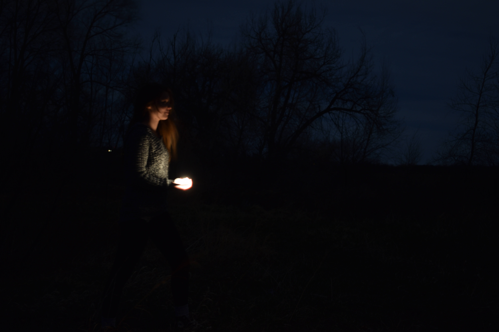
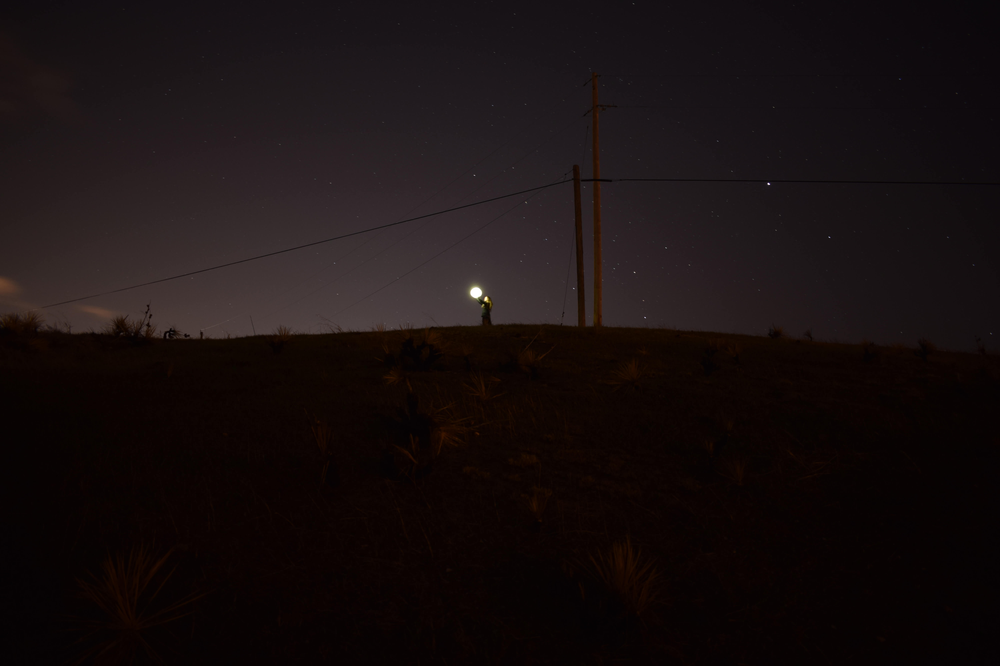
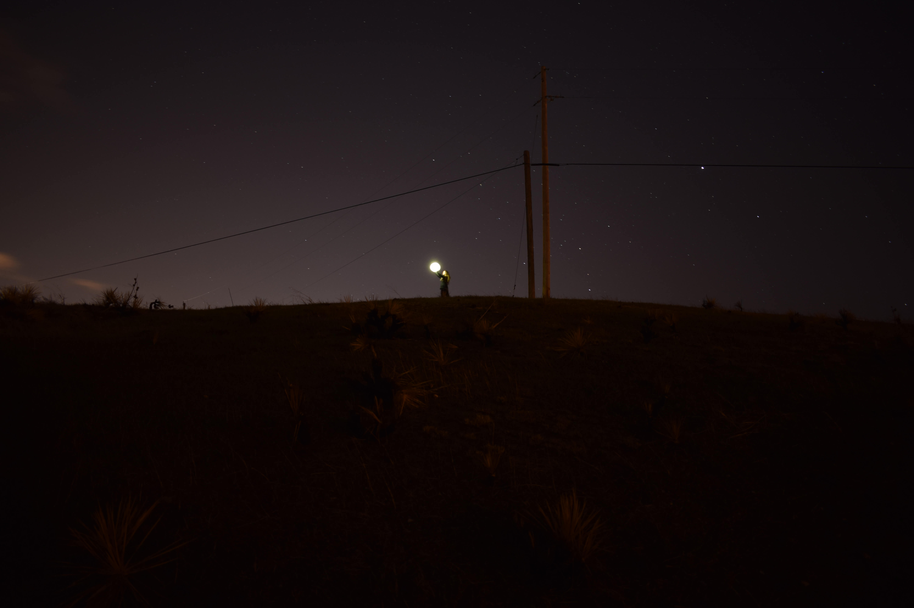

Armed with a camera, two flashlights, 3 glass ceiling light covers, and a hollowed out lightbulb, we set out at dusk to take pictures as the sky got progressively darker. Getting the settings right to capture a sharp image proved to be tricky in the low lighting. We experimented for a long time with the aperture and ISO trying to find the right balance. It was frustrating at times not being able to get a shot in focus, there were a lot of photos I would've liked to have included if they'd only been a little more clear. It took us longer than expected to get the shots, we ended up braving the cold, thistles, and coyotes for 3 nights instead of just 1. I am very thankful for having such a patient friend to help and in the end, though not perfect, I'm happy with how the project turned out.

 

 2019 Sonia Szeton | All Rights Reserved
2019 Sonia Szeton | All Rights Reserved